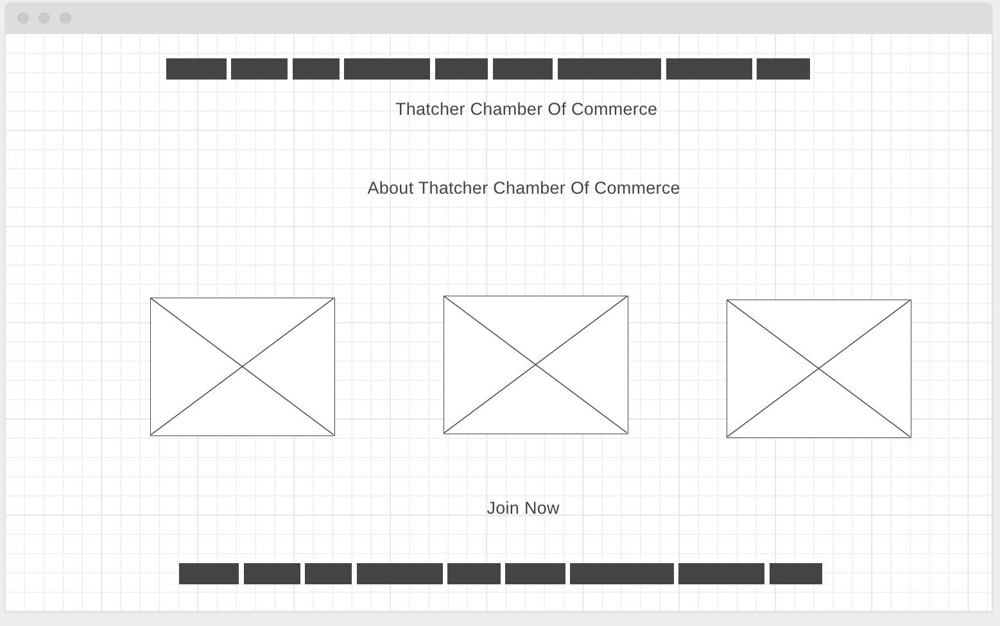

Site Purpose
The Thatcher Chamber of Commerce takes on the role of
the city. We will promote local businesses and can help keep track
of possible and current activites. In addition we list places that people
should go to. We strive to make the lives of the business owners who live
in the city of Thatcher easier and better.
Scenarios
What events will be held in the area?
Where can I go for fun
How can I promote my business?
What is the best way to contact the Chamber of Commerce?
How can I find out more about becoming a member of the Chamber of Commerce?
What types of businesses does the Chamber normally target or help?
Color Schema
Background: Silver Metallic (#ACACAF)
Headings: Yale Blue (#054A8A)
Body: Blue NCS (#2684BA)
Accent: Green Pantone (#1EAE4E)
Typography
Headings: Dosis
Body: Lato
Wireframes
